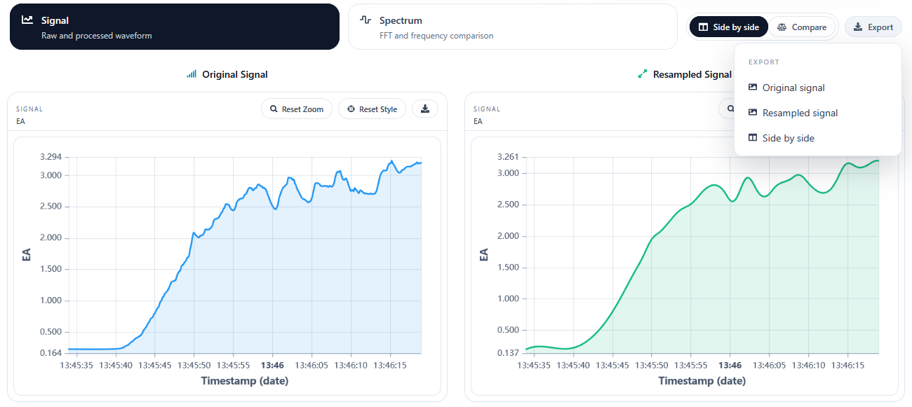
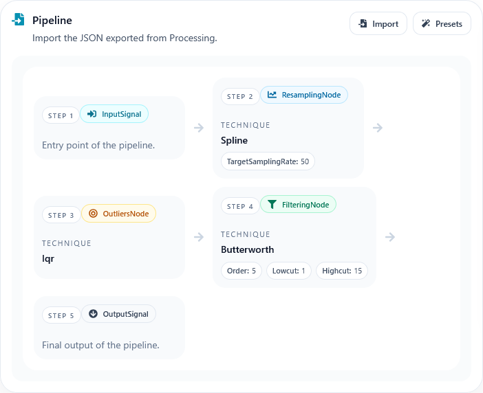

Core Widgets
Several interface components appear across multiple pages in SignAlchemist. This section summarises those shared elements so they do not need to be repeated in every page-specific chapter.
Signal and Spectrum Views
Many pages use the same result area to inspect original and processed data.
This area usually includes:
Signal view for waveform inspection
Spectrum view for frequency-domain inspection
Side by side and Compare modes for layout changes
When both original and processed data are available, the export menu can generate PNG captures of each panel or a combined side-by-side export.
{kind=link}

Charts
The chart widgets support the most common interactions expected during exploratory work:
Hover tooltips
Zoom and pan
Reset actions
Linked behaviour where appropriate
SignAlchemist includes dedicated widgets for single-signal charts, single-signal spectra, signal comparison charts, and spectrum comparison charts.
Metrics
The metrics panel appears when the selected signal type provides quality indicators, mainly for EDA and PPG.
Each metric card can provide:
A short label
A brief interpretation
Raw and processed values when comparison is available
Signal Summary
Several pages also include a compact summary of the loaded signal, usually showing:
Duration
Sampling rate
Number of samples
This helps the user confirm that the correct dataset is being analysed.
Pipeline Steps
Batch uses a pipeline summary widget to visualise the imported workflow at a glance.
This is especially useful when:
Reviewing an imported JSON pipeline
Confirming the order of operations before execution
Explaining a workflow to another user
{kind=link}
